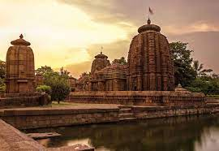
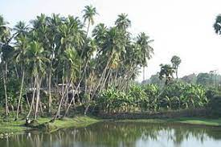
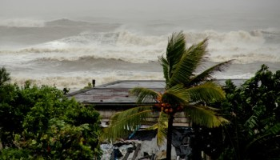

Orissa
Food:
Santula. One of the main food dishes of Orissa/ Odisha, Santula is a classic Oriya delicacy
that you can slurp and slurp even more on your trip. Made with raw papaya,
brinjal, and tomato, the dish has more greens and fewer spices,
thereby having all the makings for a healthy dish.
Vegetation:
Sal and Bamboo forests, occur predominantly in Southern Orissa, Teaks occur naturally in Koraput, Bolangir
and Kalahandi bdistricts along with a number of other valuable species.
Ecologically, South Orissa is the meeting point of two giant species of Indian Forests Sal and Teak.
Climate:
The state has tropical climate, characterized by high temperature, high humidity,
medium to high rainfall and short and mild winters.
As per “Thornthwaite's classification”, Odisha comes under the “Sub humid” category,
implying deficient winter rains.